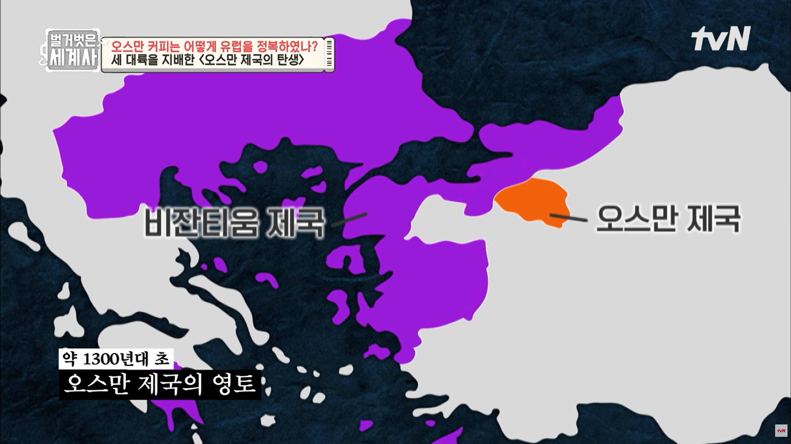
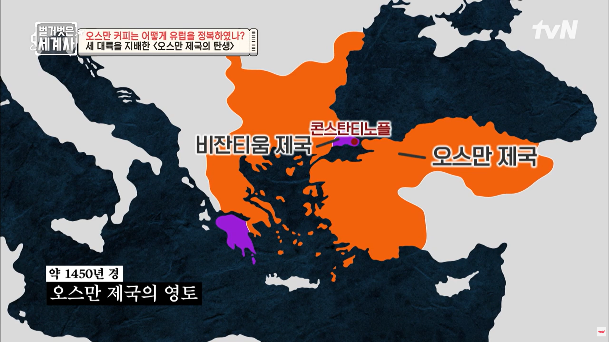
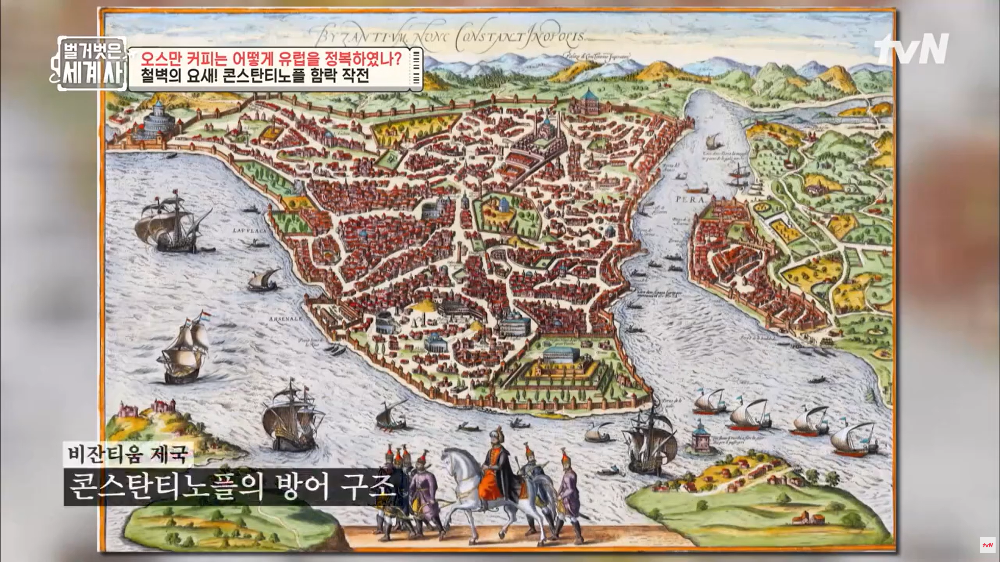
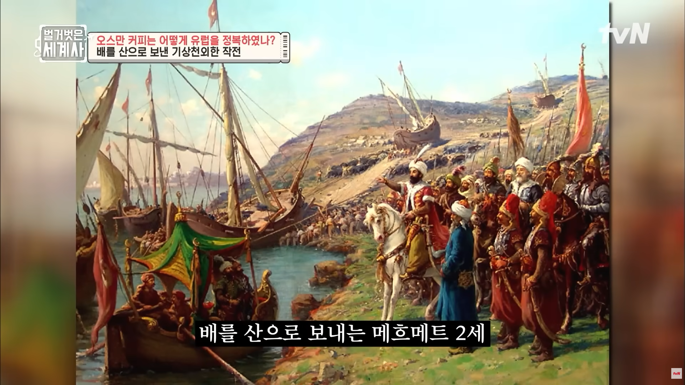

🕌
세계사 · Ⅲ-1. 아시아의 다민족 제국들 — 학습지 63~64쪽
✦ ✦ ✦
교과서 136~139쪽
4. 오스만 제국
◆
오스만 제국의 발전 · 통치 제도 · 경제와 문화 · 티무르·사파비 왕조
◆
🏛️
학습지 63쪽 — 1. 오스만 제국의 성립과 발전 · 성립 · 메흐메트 2세
◆
1. 오스만 제국의 성립과 발전
🌙 성립
오스만족이 아나톨리아 지역에서 건국
⚔️ 메흐메트 2세
메흐메트 2세 때 ➊
콘스탄티노폴리스
함락 → 비잔티움 제국 멸망
발칸반도 대부분, 아나톨리아, 유프라테스강 상류, 흑해 연안 확보
🗺️
오스만 제국의 발전 — 1300년대 초 오스만 제국의 영토

🗺️
오스만 제국의 발전 — 1450년 경 오스만 제국의 영토

🏰
콘스탄티노플 함락 작전 — 비잔티움 제국 콘스탄티노플의 방어 구조

⚔️
콘스탄티노플 함락 작전 — 메흐메트 2세의 기상천외한 작전
⛵
콘스탄티노플 함락 작전 — 배를 산으로 보내는 메흐메트 2세

👑
학습지 63쪽 — 1. 오스만 제국의 성립과 발전 · 셀림 1세 · ➋
◆
1. 오스만 제국의 성립과 발전
🗡️ 셀림 1세
이집트와 시리아를 지배하던 맘루크 왕조 멸망
메카와 메디나의 보호권 장악
👑 ➋
술레이만 1세
헝가리를 정복하고 빈을 포위 공격, 유럽의 연합 함대를 무찔러 동지중해 제해권 확보
법전 편찬 및 정부 조직과 행정 제도 정비
📜
학습지 63쪽 — (2) 통치 제도 ①②③
◆
(2) 통치 제도
🏛️ ① 위임 통치
총독이나 현지 지배자에게 새로 획득한 영토의 통치 위임(넓은 영토 통치 목적)
🌾 ② ➌
티마르
제도
술탄의 직할지에서 시행
기병에게 복무의 대가로 일정 토지에 대한 징세권을 부여하는 제도
⚔️ ③ 데브시르메 · 예니체리
데브시르메 제도 시행, 예니체리(최정예 부대) 운용
🕊️
학습지 63쪽 — (2) 통치 제도 ④⑤
◆
(2) 통치 제도
🕊️ ④ 밀레트 제도
인두세 납부를 조건으로 자치를 인정받은 종교 공동체
비이슬람교도를 종파 단위로 장악한 제도
🌍 ⑤ 다민족 관용
서로 다른 민족들의 종교와 문화 보장, 출신이나 종교에 상관없는 기회 제공
🎨
학습지 63쪽 — 2. 오스만 제국의 경제와 문화
◆
2. 오스만 제국의 경제와 문화
💰 경제
동서 중계 무역의 요충지에 위치하여 경제적 번영
상업 도시 번성, 외국 상인들에게 안전 보장과 면세 등의 특권 부여
🎭 문화
이슬람 문화의 바탕, 비잔티움, 페르시아, 튀르크 문화 등 동서 문화 융합
건축, 문학, 미술 및 천문학, 수학, 지리학 등 실용적 학문 발달
🏰
학습지 64쪽 — 3. 티무르 왕조와 사파비 왕조
◆
3. 티무르 왕조와 사파비 왕조
🏇 (1) 티무르 왕조
티무르가 몽골 제국의 재건을 내세우며 수립
인도 서북부에서 서아시아에 이르는 영역 정복 → 티무르의 사망 이후, ➍
우즈베크
인에게 멸망
🕌 (2) 사파비 왕조
이스마일 1세가 수립, 시아파 이슬람교 국교
아바스 1세 시기 수도를 이스파한으로 옮기고 발전 → 왕실 내부 분열과 아프간족의 침입 등으로 쇠퇴
✏️
학습지 64쪽 — 개념 확인 문제 1
◆
개념 확인 문제 1
— 옳으면 ○, 틀리면 × 하시오
⑴
오스만 제국은 새로 획득한 영토의 통치를 총독이나 현지 지배자에게 위임하였다. (
○
)
⑵
술탄의 직할지에서는 토지 조사를 거쳐 티마르 제도가 시행되었다. (
○
)
⑶
사파비 왕조는 17세기 말 왕실 내부의 분열로 인한 혼란과 우즈베크인의 침입 등으로 쇠퇴하다가 멸망하였다. (
×
)
✏️
학습지 64쪽 — 개념 확인 문제 2
◆
개념 확인 문제 2
— 빈칸에 알맞은 말을 쓰시오
⑴
오스만 제국은 티무르 왕조와의 (
앙카라
) 전투에서 패해 위기를 맞이하였으나 곧 국가 체제를 정비하였다.
⑵
티마르를 받은 기병과 (
데브시르메
) 제도에 의해 징집된 예니체리 군단은 오스만 제국의 팽창에 크게 기여하였다.
⑶
사파비 왕조는 (
시아파
) 이슬람교를 국교로 정하고 페르시아의 군주 칭호인 '샤'를 사용하는 등 고대 페르시아 제국의 계승을 내세웠다.
🔗
학습지 64쪽 — 개념 확인 문제 3
◆
개념 확인 문제 3
— 단어와 내용을 선으로 연결하시오
⑴ 메메트 2세
→
비잔티움 제국을 멸망시킴
⑵ 셀림 1세
→
맘루크 왕조를 멸망시킴
⑶ 술레이만 1세
→
헝가리를 정복하고 빈을 포위 공격함
📋
학습지 64쪽 — 개념 확인 문제 4
◆
개념 확인 문제 4
— 이슬람 제국과 수도의 연결이 옳은 것만을 <보기>에서 고르시오
ㄱ. 오스만 제국 – 메디나 ㄴ. 티무르 왕조 – 사마르칸트 ㄷ. 사파비 왕조 – 이스파한
답
(
ㄴ, ㄷ
)
/
11